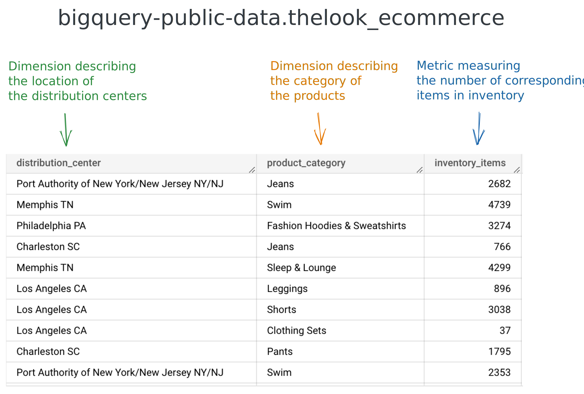
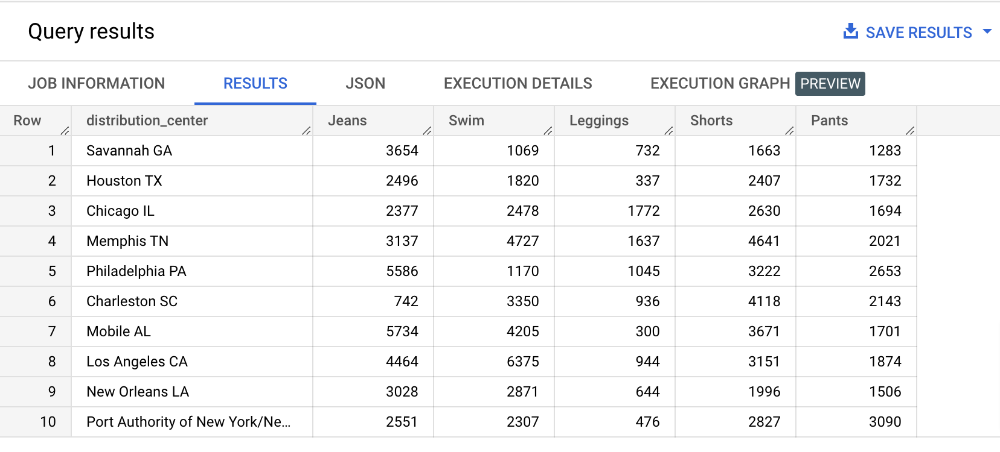
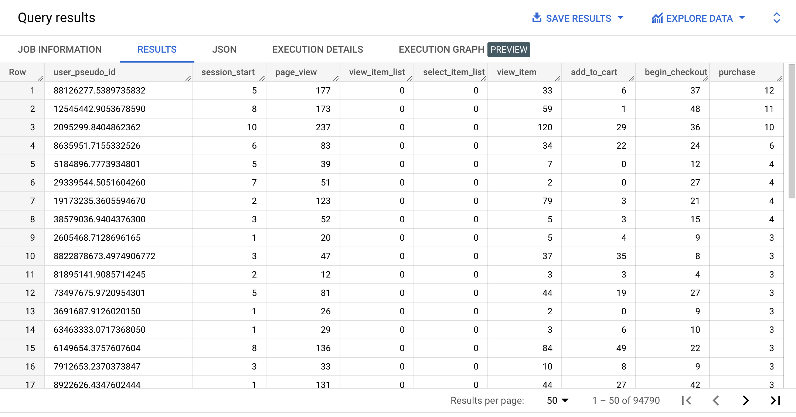

A SQL table is made of columns and rows. We can also think about it as made of dimensions and metrics.
Metrics are used to measure things and are number-based. For example, a number of items in inventory. Dimensions are used to describe things, so they are usually text-based, for example, the names of distribution centers, or the categories of products.

The goal of the pivoting operation is to take some dimension’s values and use them as metrics, in new columns:
To achieve, this, you can use the PIVOT operator.
Type the query below in the BigQuery console and run it. Don't copy paste. 😉
WITH distribution_centers_product_categories AS
( SELECT centers.name AS distribution_center,
inventory_items.product_category AS product_category
FROM bigquery-public-data.thelook_ecommerce.distribution_centers AS centers
INNER JOIN bigquery-public-data.thelook_ecommerce.inventory_items AS inventory_items
ON centers.id = inventory_items.product_distribution_center_id
),
inventory_items_by_category_and_center AS
( SELECT distribution_center,
product_category,
COUNT(*) AS inventory_items
FROM distribution_centers_product_categories
GROUP BY distribution_center, product_category
)
SELECT *
FROM inventory_items_by_category_and_center
PIVOT (
SUM(inventory_items)
FOR product_category
IN (
'Jeans',
'Swim',
'Leggings',
'Shorts',
'Pants'
)
)
ORDER BY RAND();
Example results:

The PIVOT operator is part of the FROM clause. Similar to the JOINs, it comes after the source table, from which it does the transformation. As you can see above, the PIVOT operator has 3 components:
SUM(inventory_items)).FOR product_category).IN ( 'Jeans', 'Swim', 'Leggings', 'Shorts', 'Pants' )).Good to know:
The same results can be accomplished by using a combination of{% include practice_problems_intructions.html %}CASE WHENandGROUP BY. That will be the topic of one of our practice problems for this lesson.
bigquery-public-data.ga4_obfuscated_sample_ecommerce.events_*
Using the built-in PIVOT operator, write a query that will display, by user, in January 2021, the number of occurrences of each of the following event types (event_name column):

SELECT *
FROM (
SELECT user_pseudo_id, event_name
FROM `bigquery-public-data.ga4_obfuscated_sample_ecommerce.events_*`
WHERE _table_suffix BETWEEN '20210101' AND '20210131'
)
PIVOT (
COUNT(*)
FOR event_name
IN (
'session_start',
'page_view',
'view_item_list',
'select_item_list',
'view_item',
'add_to_cart',
'begin_checkout',
'purchase'
)
)
ORDER BY purchase DESC;
bigquery-public-data.ga4_obfuscated_sample_ecommerce.events_*
WITHOUT using the built-in PIVOT operator, write a query that will display, by user, in January 2021, the number of occurrences of each of the following event types (event_name):
WITH user_events AS
( SELECT user_pseudo_id, event_name
FROM `bigquery-public-data.ga4_obfuscated_sample_ecommerce.events_*`
WHERE _table_suffix BETWEEN '20210101' AND '20210131'
)
SELECT user_pseudo_id,
COUNT(CASE WHEN event_name = 'session_start' THEN 1 END) AS session_start,
COUNT(CASE WHEN event_name = 'page_view' THEN 1 END) AS page_view,
COUNT(CASE WHEN event_name = 'view_item_list' THEN 1 END) AS view_item_list,
COUNT(CASE WHEN event_name = 'select_item_list' THEN 1 END) AS select_item_list,
COUNT(CASE WHEN event_name = 'view_item' THEN 1 END) AS view_item,
COUNT(CASE WHEN event_name = 'add_to_cart' THEN 1 END) AS add_to_cart,
COUNT(CASE WHEN event_name = 'begin_checkout' THEN 1 END) AS begin_checkout,
COUNT(CASE WHEN event_name = 'purchase' THEN 1 END) AS purchase
FROM user_events
GROUP BY user_pseudo_id
ORDER BY purchase DESC;